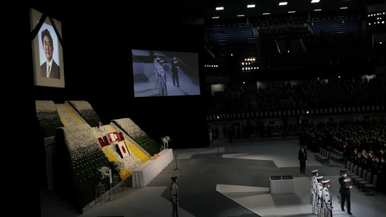

Shinzo Abe funeral: Hundreds of global representatives are attending the funeral of Japan's longest serving prime minister.
 Cricket NewsPrime Minister Narendra Modi is among the global leaders attending the funeral of Shinzo Abe, who died in July after he was shot at during a speech amid a poll campaign. Hundreds of global representatives and thousands of attendees congregated in Tokyo to pay last respects to the Japan’s longest-serving prime minister.
1. In a tweet, PM Modi on Monday night shared details of his Tokyo visit, and said that he would be paying last respects to Abe,
who he remembered as “a dear friend and a great champion of India-Japan friendship”.
2. Ahead of the funeral, Modi also met Japanese PM Fumio Kishida. "Today we are meeting in this hour of sorrow.
The last time I came I had a long conversation with former Japanese PM Shinzo Abe.
India is missing Shinzo Abe and remembering him and Japan," PM Modi was quoted as saying by news agency ANI.
3. “I've faith that under your leadership, India-Japan relations will deepen and scale new heights and we will be able to play an appropriate role in solving the problems of the world,”
he further said.